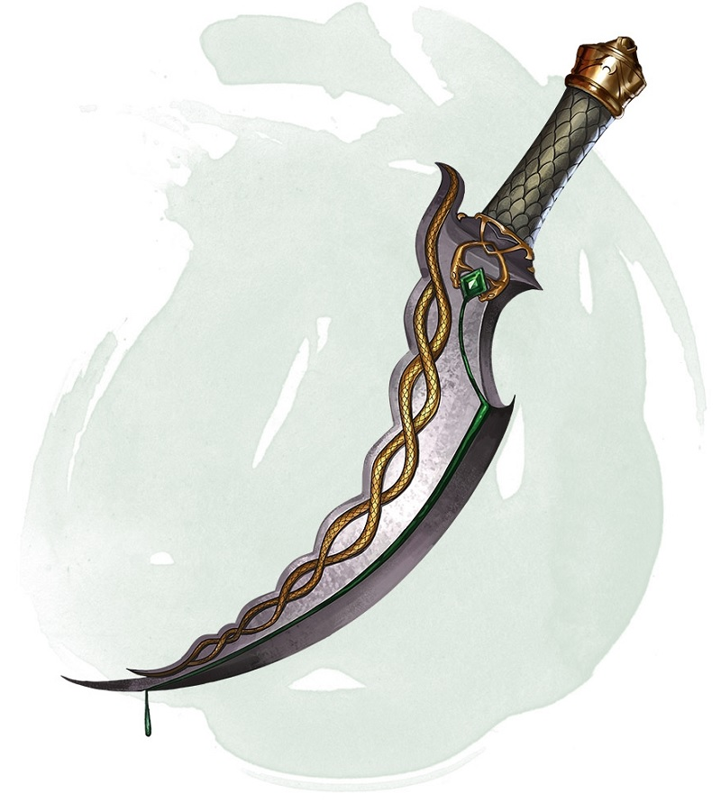

Dagger of Venom
[ Dague venimeuse ]
Weapon (dagger), rare
You gain a +1 bonus to attack and damage rolls made with this magic weapon.
You can use an action to cause thick, black poison to coat the blade. The poison remains for 1 minute or until an attack using this weapon hits a creature. That creature must succeed on a DC 15 Constitution saving throw or take 2d10 poison damage and become poisoned for 1 minute. The dagger can't be used this way again until the next dawn.
You can use an action to cause thick, black poison to coat the blade. The poison remains for 1 minute or until an attack using this weapon hits a creature. That creature must succeed on a DC 15 Constitution saving throw or take 2d10 poison damage and become poisoned for 1 minute. The dagger can't be used this way again until the next dawn.
Dungeon Master´s Guide (SRD)
